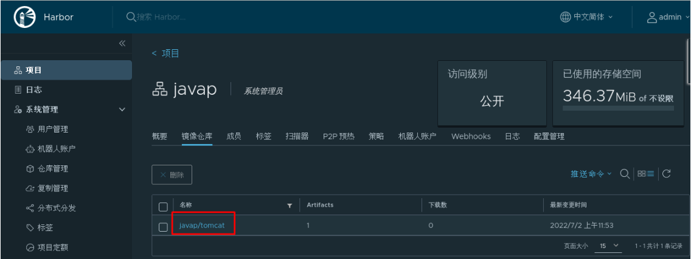
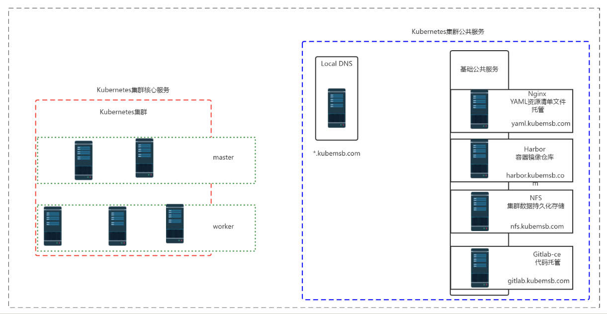
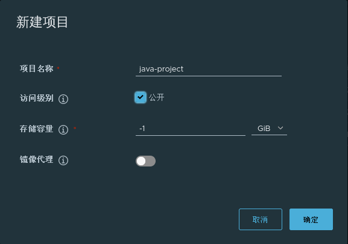
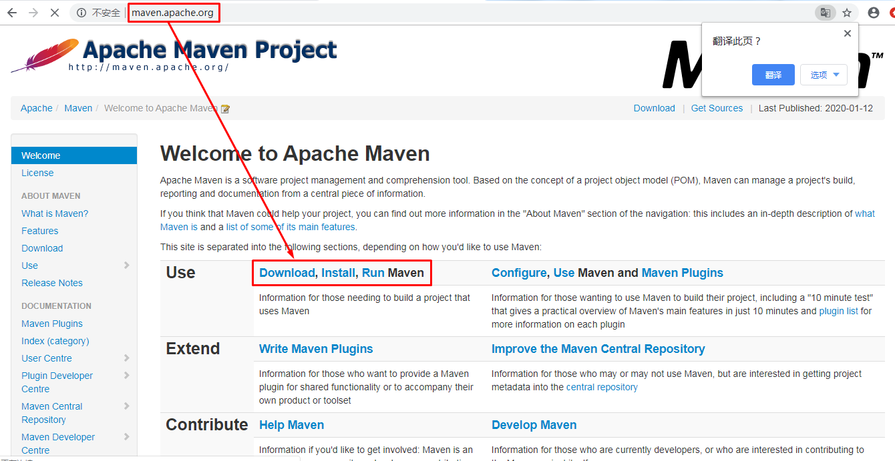
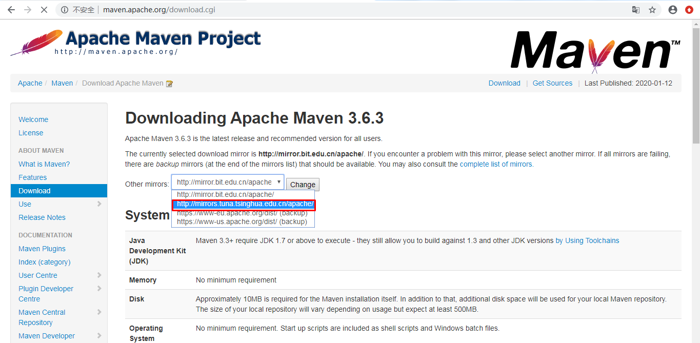
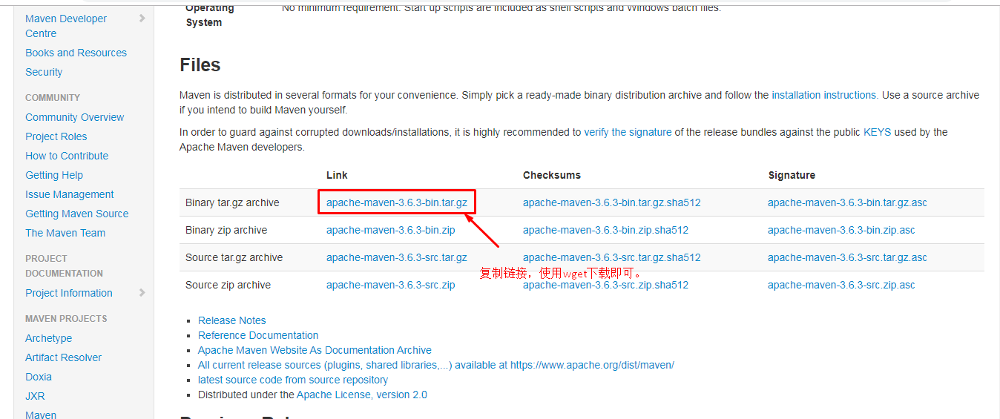
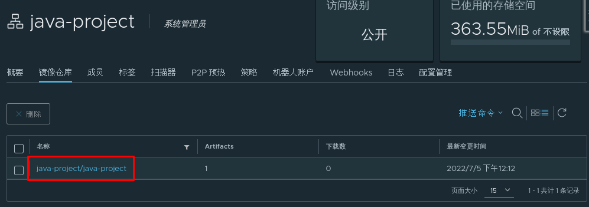
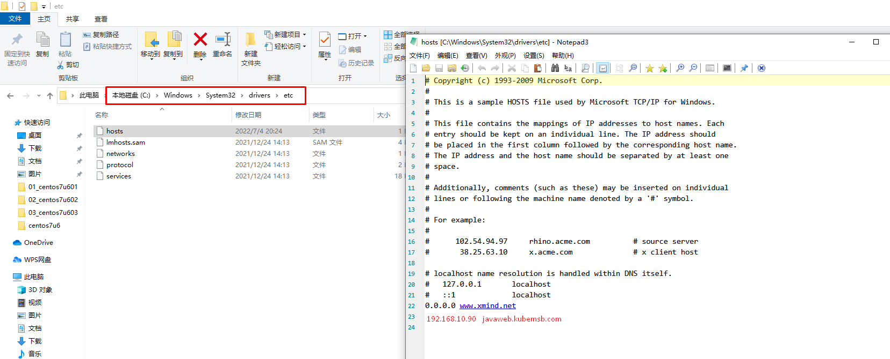

kubernetes集群java项目上云部署¶
一、部署前准备工作¶
1.1 部署项目情况¶
1.1.1 业务部署架构¶
- 单体服务架构
- 分布式服务架构
- 微服务架构
- 超微服务架构
1.1.2 项目涉及第三方服务¶
- 关系型数据库系统 MySQL
- 缓存服务 Redis memcache
- 协调服务 zookeeper
- 消息中间件服务 kafka rabbitmq
- 服务注册 服务发现 nacos
1.1.3 项目所需要的资源¶
- 计算资源
- cpu
- 内存
- 存储资源
- 本地存储
- 网络存储
1.2 部署项目所需要的k8s资源¶
1.2.1 多k8s集群资源¶
- 测试环境
- 开发环境
- 预发布环境
- 生产环境
1.2.2 使用namespace隔离项目或环境¶
- 每项目独立使用namespace
- 每环境独立使用namespace
1.2.3 有状态应用部署¶
部署时考虑哪些系统使用有状态应用部署方式
- statefulset
- 数据持久化存储动态供给（pv及pvc）
- 例如：mysql
1.2.4 无状态应用部署¶
- deployment
- 数据持久化存储动态供给
- 例如：tomcat
1.2.5 暴露外部访问¶
- service类型
- 有状态应用部署使用headless service
- 无状态应用部署使用ClusterIP
- 暴露服务方式
- ingress
- api gateway
1.2.6 密钥及配置管理¶
- configmap
- mysql配置文件
- secret
- k8s集群使用harbor私有项目仓库镜像
1.3 项目基础镜像准备¶
本次发布一个java项目，以war包方式发布，需要使用tomcat做为项目基础镜像。可直接下载使用，也可选择定制。
1.3.1 定制tomcat镜像¶
1.3.1.1 直接下载¶
直接下载
[root@harborserver ~]# docker pull tomcat
1.3.1.2 通过Dockerfile文件定制¶
[root@harborserver ~]# mkdir tomcatdockerfile
[root@harborserver ~]# cd tomcatdockerfile/
[root@harborserver tomcatdockerfile]# cat Dockerfile
FROM centos:centos7
MAINTAINER "admin<admin@kubemsb.com>"
ENV VERSION=8.5.81
ENV JAVA_HOME=/usr/local/jdk
RUN yum -y install wget
RUN wget https://dlcdn.apache.org/tomcat/tomcat-8/v${VERSION}/bin/apache-tomcat-${VERSION}.tar.gz --no-check-certificate
RUN tar xf apache-tomcat-${VERSION}.tar.gz
RUN mv apache-tomcat-${VERSION} /usr/local/tomcat
RUN rm -rf apache-tomcat-${VERSION}.tar.gz /usr/local/tomcat/webapps/*
RUN mkdir /usr/local/tomcat/webapps/ROOT
ADD ./jdk /usr/local/jdk
RUN echo "export TOMCAT_HOME=/usr/local/tomcat" >> /etc/profile
RUN echo "export JAVA_HOME=/usr/local/jdk" >> /etc/profile
RUN echo "export PATH=$TOMCAT_HOME/bin:$JAVA_HOME/bin:$PATH" >> /etc/profile
RUN echo "export CLASSPATH=.:$JAVA_HOME/lib/dt.jar:$JAVA_HOME/lib/tools.jar" >> /etc/profile
RUN source /etc/profile
EXPOSE 8080
CMD ["/usr/local/tomcat/bin/catalina.sh","run"]
[root@harborserver tomcatdockerfile]# ll
总用量 4
-rw-r--r-- 1 root root 865 1月 15 16:44 Dockerfile
drwxr-xr-x 7 10 143 245 10月 6 2018 jdk
[root@harborserver tomcatdockerfile]# docker build -t www.kubemsb.com/java-project/tomcat:8581 .
......
Successfully built db4db20a6c85
Successfully tagged www.kubemsb.com/java-project/tomcat:8581
[root@harborserver ~]# docker images
REPOSITORY TAG IMAGE ID CREATED SIZE
www.kubemsb.com/javap/tomcat 8581 db4db20a6c85 11 minutes ago 817MB
[root@harborserver ~]# docker login www.kubemsb.com
Username: admin
Password: 12345
WARNING! Your password will be stored unencrypted in /root/.docker/config.json.
Configure a credential helper to remove this warning. See
https://docs.docker.com/engine/reference/commandline/login/#credentials-store
Login Succeeded
[root@harborserver ~]# docker push www.kubemsb.com/java-project/tomcat:8581
1.3.2 在harbor验证tomcat镜像是否上传¶

1.4 项目编排部署¶
1.4.1 项目资源¶
- JAVA项目源码
- JAVA项目容器镜像
- JAVA项目资源清单文件
- 数据库系统 MySQL
1.4.2 项目镜像构建方法¶
- 手动构建容器镜像（Dockerfile）
- 自动构建容器镜像（jenkins ci/cd）
1.5 项目部署工作流程¶
- 基于项目源码制作容器镜像
- 编写项目部署资源清单文件
- 使用资源清单文件创建项目 Service
- 使用ingress暴露服务实现项目对外可访问
1.6 项目部署基础环境架构¶

二、存储准备¶
本次使用NFS服务做为K8S集群后端存储，实现kubernetes集群持久存储动态供给，详细可见kubernetes集群公共服务章节。
[root@master01 ~]# kubectl get storageclass
NAME PROVISIONER RECLAIMPOLICY VOLUMEBINDINGMODE ALLOWVOLUMEEXPANSION AGE
nfs-client k8s-sigs.io/nfs-subdir-external-provisioner Delete Immediate false 10s
三、项目容器镜像仓库及项目源码准备¶
3.1 项目容器容器仓库准备¶
3.1.1 Harbor部署¶
参考kubernetes集群公共服务中容器镜像托管仓库章节
3.1.2 Harbor添加项目容器镜像仓库¶

3.2 项目源码及编译环境准备¶
3.2.1 项目源码准备¶
[root@harbor ~]# ls
anaconda-ks.cfg initial-setup-ks.cfg javaproject 公共 模板 视频 图片 文档 下载 音乐 桌面
[root@harbor ~]# cd javaproject/
[root@harbor javaproject]# ls
project-source tomcatdockerfile
[root@harbor javaproject]# ls project-source/
db pro-source
[root@harbor javaproject]# ls project-source/db
test.sql
[root@harbor javaproject]# ls project-source/pro-source/
java-project
[root@harbor javaproject]# ls project-source/pro-source/java-project/
Dockerfile LICENSE pom.xml README.md src
[root@harbor javaproject]# ls project-source/pro-source/java-project/src
main 源码目录
[root@harbor java-project]# cat Dockerfile
FROM www.kubemsb.com/java-project/tomcat:8581
LABEL maintainer "admin <admin@kubemsb.com>"
RUN rm -rf /usr/local/tomcat/webapps/*
ADD target/*.war /usr/local/tomcat/webapps/ROOT.war
[root@harbor java-project]# cat README.md
> ### SQL文件: db/test.sql
> ### 数据库配置：src/main/resources/application.yml
[root@harbor java-project]# cat src/main/resources/application.yml
server:
port: 8080
spring:
datasource:
url: jdbc:mysql://db-0.mysql.javaproject:3306/test?characterEncoding=utf-8
username: root
password: 123456
driver-class-name: com.mysql.jdbc.Driver
freemarker:
allow-request-override: false
cache: true
check-template-location: true
charset: UTF-8
content-type: text/html; charset=utf-8
expose-request-attributes: false
expose-session-attributes: false
expose-spring-macro-helpers: false
suffix: .ftl
template-loader-path:
- classpath:/templates/
3.2.2 项目编译环境准备 jdk & maven¶
用于对java项目代码进行编译打包代码
3.2.2.1 下载maven¶



[root@harborserver ~]# wget http://mirrors.tuna.tsinghua.edu.cn/apache/maven/maven-3/3.6.3/binaries/apache-maven-3.6.3-bin.tar.gz
3.2.2.2 安装maven¶
必须要有官方的jdk，不然maven会报错
[root@harborserver ~]# ls
jdk-8u191-linux-x64.tar.gz
[root@harborserver ~]# tar xf jdk-8u191-linux-x64.tar.gz
[root@harborserver ~]# ls
jdk1.8.0_191
[root@harborserver ~]# mv jdk1.8.0_191 /usr/local/jdk
[root@harborserver ~]# ls /usr/local/jdk
bin lib src.zip
COPYRIGHT LICENSE THIRDPARTYLICENSEREADME-JAVAFX.txt
include man THIRDPARTYLICENSEREADME.txt
javafx-src.zip README.html
jre release
[root@harborserver ~]# ls
apache-maven-3.6.3-bin.tar.gz
[root@harborserver ~]# tar xf apache-maven-3.6.3-bin.tar.gz
[root@harborserver ~]# ls
apache-maven-3.6.3
[root@harborserver ~]# mv apache-maven-3.6.3 /usr/local/maven
[root@harborserver ~]# ls /usr/local/maven/
bin boot conf lib LICENSE NOTICE README.txt
[root@harborserver ~]# cat /etc/profile.d/maven.sh
export JAVA_HOME=/usr/local/jdk
export MAVEN_HOME=/usr/local/maven
export PATH=${MAVEN_HOME}/bin:${JAVA_HOME}/bin:$PATH
[root@harborserver ~]# source /etc/profile
[root@harborserver ~]# mvn -v
Apache Maven 3.6.3 (cecedd343002696d0abb50b32b541b8a6ba2883f)
Maven home: /usr/local/maven
Java version: 1.8.0_191, vendor: Oracle Corporation, runtime: /usr/local/jdk/jre
Default locale: zh_CN, platform encoding: UTF-8
OS name: "linux", version: "3.10.0-1062.9.1.el7.x86_64", arch: "amd64", family: "unix"
四、项目部署¶
4.1 本项目部署思路¶
4.1.1 本次部署的应用¶
- 数据库 MySQL
- Web应用 Tomcat
4.1.2 有状态应用与无状态应用部署规划¶
- mysql
- statefulset控制器
- headless service
-
pv,pvc 存储资源动态供给
-
tomcat（java应用）
- deployment控制器
- ClusterIP Service
- Ingress 服务暴露实现集群外访问
4.2 项目资源清单文件准备¶
4.2.1 项目文件总览¶
[root@harbor java-project]# pwd
/root/javaproject/project-source/pro-source/java-project
[root@harbor java-project]# ls
Dockerfile LICENSE pom.xml README.md src
[root@nginx 03_java_project]# ls
01_ns.yaml 02_deployment.yaml 03_service.yaml 04_ingress.yaml 05_mysql.yaml 06_create_pod_busybox.yaml
4.2.2 资源清单文件准备¶
4.2.2.1 namespace资源清单文件¶
用于实现项目隔离
# cat 01_ns.yaml
apiVersion: v1
kind: Namespace
metadata:
name: javaproject
4.2.2.2 部署java项目资源清单文件¶
用于部署java项目
# cat 02_deployment.yaml
apiVersion: apps/v1
kind: Deployment
metadata:
name: java-project
namespace: javaproject
spec:
replicas: 2
selector:
matchLabels:
project: www
app: java-demo
template:
metadata:
labels:
project: www
app: java-demo
spec:
imagePullSecrets:
- name: harborreg #认证信息
containers:
- name: tomcat
image: www.kubemsb.com/java-project/java-project:v1 #镜像
imagePullPolicy: Always
ports:
- containerPort: 8080
name: web
protocol: TCP
resources:
requests:
cpu: 0.5
memory: 1Gi
limits:
cpu: 1
memory: 2Gi
livenessProbe:
httpGet:
path: /
port: 8080
initialDelaySeconds: 60
timeoutSeconds: 20
readinessProbe:
httpGet:
path: /
port: 8080
initialDelaySeconds: 60
timeoutSeconds: 20
4.2.2.3 项目服务（service）资源清单文件¶
用于创建service
# cat 03_service.yaml
apiVersion: v1
kind: Service
metadata:
name: java-project
namespace: javaproject
spec:
selector:
project: www
app: java-demo
ports:
- name: web
port: 80
targetPort: 8080
4.2.2.4 Ingress对象资源清单文件¶
需要提前部署 ingress控制器
# cat 04_ingress.yaml
apiVersion: networking.k8s.io/v1
kind: Ingress
metadata:
name: java-project
namespace: javaproject
annotations:
ingressclass.kubernetes.io/is-default-class: "true"
kubernetes.io/ingress.class: nginx
spec:
rules:
- host: javaweb.kubemsb.com
http:
paths:
- pathType: Prefix
path: /
backend:
service:
name: java-project
port:
number: 80
4.2.2.5 mysql部署资源清单文件¶
# cat 05_mysql.yaml
apiVersion: v1
kind: Service
metadata:
name: mysql
namespace: javaproject
spec:
ports:
- port: 3306
name: mysql
clusterIP: None
selector:
app: mysql-public
---
apiVersion: apps/v1
kind: StatefulSet
metadata:
name: db
namespace: javaproject
spec:
selector:
matchLabels:
app: mysql-public
serviceName: "mysql"
template:
metadata:
labels:
app: mysql-public
spec:
containers:
- name: mysql
image: mysql:5.7
env:
- name: MYSQL_ROOT_PASSWORD
value: "123456"
- name: MYSQL_DATABASE
value: test
ports:
- containerPort: 3306
volumeMounts:
- mountPath: "/var/lib/mysql"
name: mysql-data
volumeClaimTemplates:
- metadata:
name: mysql-data
spec:
accessModes: ["ReadWriteMany"]
storageClassName: "nfs-client"
resources:
requests:
storage: 5Gi
4.2.2.6 mysql访问测试pod¶
# cat 06_create_pod_busybox.yaml
apiVersion: v1
kind: Pod
metadata:
name: busybox-pod
spec:
containers:
- name: busybox-container
image: busybox:1.28.4 #此镜像nslookup及ping命令都没有问题，不要下载最新版本和1.31。
imagePullPolicy: IfNotPresent
command:
- sleep
- "3600"
restartPolicy: Always
4.3 项目数据库 Mysql部署¶
4.3.1 创建命名空间¶
# kubectl apply -f http://yaml.kubemsb.com/03_java_project/01_ns.yaml
[root@master01 ~]# kubectl get ns
NAME STATUS AGE
calico-apiserver Active 7d15h
calico-system Active 7d16h
default Active 12d
ingress-nginx Active 2d22h
javaproject Active 6s
kube-node-lease Active 12d
kube-public Active 12d
kube-system Active 12d
metallb-system Active 2d22h
tigera-operator Active 7d16h
4.3.2 部署数据库¶
# kubectl apply -f http://yaml.kubemsb.com/03_java_project/05_mysql.yaml
[root@master01 ~]# kubectl get all -n javaproject
NAME READY STATUS RESTARTS AGE
pod/db-0 1/1 Running 0 19s
NAME TYPE CLUSTER-IP EXTERNAL-IP PORT(S) AGE
service/mysql ClusterIP None <none> 3306/TCP 19s
NAME READY AGE
statefulset.apps/db 1/1 19s
[root@nfs ~]# ls /sdb/
javaproject-mysql-data-db-0-pvc-9f616f77-9995-4f11-ad57-833038186777
[root@nfs ~]# ls /sdb/javaproject-mysql-data-db-0-pvc-9f616f77-9995-4f11-ad57-833038186777/
auto.cnf ca.pem client-key.pem ibdata1 ib_logfile1 mysql private_key.pem server-cert.pem sys
ca-key.pem client-cert.pem ib_buffer_pool ib_logfile0 ibtmp1 performance_schema public_key.pem server-key.pem test
4.3.3 导入数据库¶
[root@harbor project-source]# scp db/test.sql 192.168.10.11:/root
[root@master01 ~]# kubectl get pods -n javaproject
NAME READY STATUS RESTARTS AGE
db-0 1/1 Running 0 15m
[root@master01 ~]# kubectl cp test.sql db-0:/ -n javaproject
[root@master01 ~]# kubectl exec -it db-0 -n javaproject -- bash
root@db-0:/# ls
bin dev entrypoint.sh home lib64 mnt proc run srv test.sql usr
boot docker-entrypoint-initdb.d etc lib media opt root sbin sys tmp var
root@db-0:/# mysql -uroot -p123456
mysql: [Warning] Using a password on the command line interface can be insecure.
Welcome to the MySQL monitor. Commands end with ; or \g.
Your MySQL connection id is 2
Server version: 5.7.38 MySQL Community Server (GPL)
Copyright (c) 2000, 2022, Oracle and/or its affiliates.
Oracle is a registered trademark of Oracle Corporation and/or its
affiliates. Other names may be trademarks of their respective
owners.
Type 'help;' or '\h' for help. Type '\c' to clear the current input statement.
mysql> use test;
Database changed
mysql> source /test.sql;
Query OK, 0 rows affected (0.00 sec)
Query OK, 0 rows affected, 1 warning (0.01 sec)
Query OK, 0 rows affected (0.02 sec)
mysql> show tables;
+----------------+
| Tables_in_test |
+----------------+
| user |
+----------------+
1 row in set (0.00 sec)
mysql> desc user;
+-------+-------------+------+-----+---------+----------------+
| Field | Type | Null | Key | Default | Extra |
+-------+-------------+------+-----+---------+----------------+
| id | bigint(20) | NO | PRI | NULL | auto_increment |
| name | varchar(30) | NO | | NULL | |
| age | int(11) | YES | | 0 | |
| sex | char(1) | YES | | 0 | |
+-------+-------------+------+-----+---------+----------------+
4 rows in set (0.02 sec)
4.3.4 验证数据库可用性¶
# kubectl apply -f http://yaml.kubemsb.com/03_java_project/06_create_pod_busybox.yaml
[root@master01 ~]# kubectl get pods
NAME READY STATUS RESTARTS AGE
busybox-pod 1/1 Running 0 4s
nfs-client-provisioner-6446865dff-pqtfj 1/1 Running 1 5d22h
[root@master01 ~]# kubectl exec -it busybox-pod -- sh
/ # nslookup db-0.mysql.javaproject
Server: 10.96.0.10
Address 1: 10.96.0.10 kube-dns.kube-system.svc.cluster.local
Name: db-0.mysql.javaproject
Address 1: 10.224.30.77 db-0.mysql.javaproject.svc.cluster.local
/ # nslookup db-0.mysql.javaproject.svc.cluster.local.
Server: 10.96.0.10
Address 1: 10.96.0.10 kube-dns.kube-system.svc.cluster.local
Name: db-0.mysql.javaproject.svc.cluster.local.
Address 1: 10.224.30.77 db-0.mysql.javaproject.svc.cluster.local
4.4 项目源码编译打包¶
4.4.1 修改项目连接数据库地址¶
[root@harbor java-project]# pwd
/root/javaproject/project-source/pro-source/java-project
[root@harbor java-project]# ls
Dockerfile LICENSE pom.xml README.md src
[root@harbor java-project]# cd src/
[root@harbor src]# ls
main
[root@harbor src]# cd main/
[root@harbor main]# ls
java resources
[root@harbor main]# cd resources/
[root@harbor resources]# ls
application.yml log4j.properties static templates
[root@harbor resources]# vim application.yml
[root@harbor resources]# cat application.yml
server:
port: 8080
spring:
datasource:
url: jdbc:mysql://db-0.mysql.javaproject:3306/test?characterEncoding=utf-8
username: root
password: 123456
driver-class-name: com.mysql.jdbc.Driver
freemarker:
allow-request-override: false
cache: true
check-template-location: true
charset: UTF-8
content-type: text/html; charset=utf-8
expose-request-attributes: false
expose-session-attributes: false
expose-spring-macro-helpers: false
suffix: .ftl
template-loader-path:
- classpath:/templates/
4.4.2 使用maven编译项目源码¶
[root@harbor java-project]# pwd
/root/javaproject/project-source/pro-source/java-project
[root@harbor java-project]# mvn clean package
[INFO] Scanning for projects...
[INFO]
[INFO] ---------------------< com.kubemsb:kubemsb-tomcat >---------------------
[INFO] Building kubemsb-tomcat 0.0.1-Test
[INFO] --------------------------------[ war ]---------------------------------
[INFO]
[INFO] --- maven-clean-plugin:3.0.0:clean (default-clean) @ kubemsb-tomcat ---
[INFO]
[INFO] --- maven-resources-plugin:3.0.1:resources (default-resources) @ kubemsb-tomcat ---
[INFO] Using 'UTF-8' encoding to copy filtered resources.
[INFO] Copying 1 resource
[INFO] Copying 136 resources
[INFO]
[INFO] --- maven-compiler-plugin:3.7.0:compile (default-compile) @ kubemsb-tomcat ---
[INFO] Changes detected - recompiling the module!
[INFO] Compiling 7 source files to /root/javaproject/project-source/pro-source/java-project/target/classes
[INFO]
[INFO] --- maven-resources-plugin:3.0.1:testResources (default-testResources) @ kubemsb-tomcat ---
[INFO] Using 'UTF-8' encoding to copy filtered resources.
[INFO] skip non existing resourceDirectory /root/javaproject/project-source/pro-source/java-project/src/test/resources
[INFO]
[INFO] --- maven-compiler-plugin:3.7.0:testCompile (default-testCompile) @ kubemsb-tomcat ---
[INFO] No sources to compile
[INFO]
[INFO] --- maven-surefire-plugin:2.21.0:test (default-test) @ kubemsb-tomcat ---
[INFO] No tests to run.
[INFO]
[INFO] --- maven-war-plugin:3.1.0:war (default-war) @ kubemsb-tomcat ---
[INFO] Packaging webapp
[INFO] Assembling webapp [kubemsb-tomcat] in [/root/javaproject/project-source/pro-source/java-project/target/kubemsb-tomcat-0.0.1-Test]
[INFO] Processing war project
[INFO] Webapp assembled in [166 msecs]
[INFO] Building war: /root/javaproject/project-source/pro-source/java-project/target/kubemsb-tomcat-0.0.1-Test.war
[INFO] ------------------------------------------------------------------------
[INFO] BUILD SUCCESS
[INFO] ------------------------------------------------------------------------
[INFO] Total time: 4.594 s
[INFO] Finished at: 2022-07-05T12:02:11+08:00
[INFO] ------------------------------------------------------------------------
[root@harbor java-project]# ls
Dockerfile LICENSE pom.xml README.md src target
[root@harbor java-project]# ls target/
classes generated-sources kubemsb-tomcat-0.0.1-Test kubemsb-tomcat-0.0.1-Test.war maven-archiver maven-status
4.5 生成项目容器镜像制品¶
[root@harbor java-project]# pwd
/root/javaproject/project-source/pro-source/java-project
[root@harbor java-project]# ls
Dockerfile LICENSE pom.xml README.md src target
[root@harbor java-project]# docker build -t www.kubemsb.com/java-project/java-project:v1 .
Sending build context to Docker daemon 42.44MB
Step 1/4 : FROM www.kubemsb.com/java-project/tomcat:8581
---> 7522e6998fbf
Step 2/4 : LABEL maintainer "admin <admin@kubemsb.com>"
---> Using cache
---> 4e61597e580c
Step 3/4 : RUN rm -rf /usr/local/tomcat/webapps/*
---> Using cache
---> fda908c158cd
Step 4/4 : ADD target/*.war /usr/local/tomcat/webapps/ROOT.war
---> c74ffbdeae67
Successfully built c74ffbdeae67
Successfully tagged www.kubemsb.com/java-project/java-project:v1
[root@harbor java-project]# docker login www.kubemsb.com
Authenticating with existing credentials...
WARNING! Your password will be stored unencrypted in /root/.docker/config.json.
Configure a credential helper to remove this warning. See
https://docs.docker.com/engine/reference/commandline/login/#credentials-store
Login Succeeded
[root@harbor java-project]# docker push www.kubemsb.com/java-project/java-project:v1

4.6 项目部署¶
# kubectl apply -f http://yaml.kubemsb.com/03_java_project/02_deployment.yaml
[root@master01 ~]# kubectl get pods -n javaproject
NAME READY STATUS RESTARTS AGE
db-0 1/1 Running 0 38m
java-project-6f74d5b85c-ckq42 0/1 Running 0 43s
java-project-6f74d5b85c-dvvcl 0/1 Running 0 43s
# kubectl apply -f http://yaml.kubemsb.com/03_java_project/03_service.yaml
[root@master01 ~]# kubectl get svc -n javaproject
NAME TYPE CLUSTER-IP EXTERNAL-IP PORT(S) AGE
java-project ClusterIP 10.106.90.232 <none> 80/TCP 57s
mysql ClusterIP None <none> 3306/TCP 39m
# kubectl apply -f http://yaml.kubemsb.com/03_java_project/04_ingress.yaml
[root@master01 ~]# kubectl get ingress -n javaproject
NAME CLASS HOSTS ADDRESS PORTS AGE
java-project <none> javaweb.kubemsb.com 192.168.10.13 80 73s
五、访问验证¶
[root@master01 ~]# kubectl get svc -n ingress-nginx
NAME TYPE CLUSTER-IP EXTERNAL-IP PORT(S) AGE
ingress-nginx-controller LoadBalancer 10.97.68.236 192.168.10.90 80:32567/TCP,443:31146/TCP 2d22h
ingress-nginx-controller-admission ClusterIP 10.106.171.219 <none> 443/TCP 2d22h
